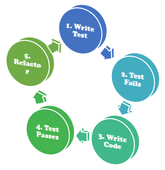

Test-Driven Development(TDD)
업데이트:
Test-Driven Development(TDD)1
- 매우 짧은 개발 서클의 반복을 갖는 소프트웨어 개발 프로세스이다.
- 먼저 테스트를 먼저 작성하고 실제 코드를 작성하기 때문에 테스트 되지 않는 코드가 없어진다. 즉, 모든 코드가 테스트되기 때문에 버그의 발생 가능성이 줄어든다.
- 테스트가 요구사항을 분명하게 드러나게 해주는 효과가 있고, 테스트에 적합하게 구현하다보면 프로그램의 디자인이 단순화되는 경향이 있다.
- 테스트가 잘 작성되어 있으면 프로그램의 변경 작업을 할 때 사이드 이펙트가 발생하는 것을 쉽게 확인 가능하므로 변경 작업을 쉽게 할 수 있게 된다. 즉, 개발 과정의 유연성이 높아지고 생산성이 향상된다.
과정

- 개발자는 먼저 요구사항을 검증하는 자동화된 테스트 케이스를 작성한다.
- 그런 후에, 그 테스트 케이스를 통과하기 위한 최소한의 코드를 생성한다.
- 마지막으로 작성한 코드를 표준에 맞도록 리팩토링한다.
테스트의 자동화
- 테스트를 자동화 함으로써, (Continuous integration)CI 단계에서 발생이 가능한 오류와 버그를 먼저 진단하여 안정적인 서비스 운영에 기여한다.
자동화 도구
- JUnit2 : Java 및 JVM을 위한 테스트 프레임워크이다.
- Selenium3 : 브라우저 기반의 웹 어플리케이션 테스트 자동화 도구이다.
- Mockito4 : Java UnitTest를 위한 테스트 프레임워크이다.
- Spock5 : Java 및 Groovy 애플리케이션을 위한 테스트 프레임워크이다.